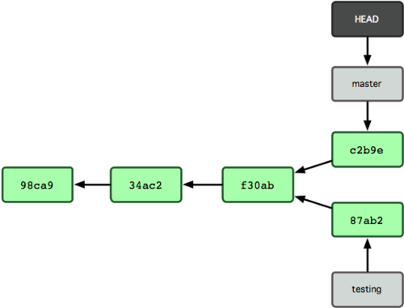

Source : Progit
Au sein d'un dépôt, les commits sont organisés sous la forme d'un arbre. On peut voir sur le schéma suivant que chaque commit est identifié par un numéro unique : le sha1 (le risque de collisions étant très faible). On remarque aussi que chaque commit pointe vers le commit précédent. De plus le commit f30ad a deux fils : c2b9e et 87ab2. Il y a un embranchement, les deux branches étant master et testing.

Source : Progit
Une branche n'est rien plus qu'un pointeur vers un commit. Un autre pointeur est HEAD qui pointe vers le commit sur lequel on est en train de travailler (le pointeur est sauvegardé dans le fichier .git/HEAD). La branche master est particulière, c'est la branche principale, de production, elle n'est censée contenir que du code fonctionnel. Les branches sont très utiles. En effet, elles permettent de faire du développement en parallèle. Supposons qu'on veuille ajouter une fonctionnalité sans perturber l'avancée de master (par d'autre ou par nous-même). Il suffit pour cela de travailler dans une autre branche br1. On pourra à tout moment revenir dans master sans être gêné par les modifications faites dans br1.
Voici quelques commandes pour créer des branches et se déplacer entre elles :
git branch [name]
git branch -d [name]
git branch
git branch -r
git branch --merged
git branch --unmerged
git branch -v
git checkout [commit/branch]
git checkout -b [name]
Pour partager son travail et se protéger de toutes pertes de données
qui pourraient advenir, il faut envoyer fréquemment ses commits sur un
serveur distant (dans notre cas hg.comelec.enst.fr). Pour cela
plusieurs commandes :
git fetch
git push [remotename] [branch]:[remotebranch]
git push [remotename] [branch]
git push [remotename] [branch]:[branch]
git push [remotename] :[remotebranch]
Pour tracker une branche, c'est-à-dire qu'elle soit associée à une branche distante, plusieurs moyens :
git push -u [remotename] [branch]:[remotebranch]
git checkout -b [branch] [remotename]/[branch]
git checkout --track [remotename]/[branch]
Une fois que l'on a terminé de travailler sur une branche, on peut vouloir la fusionner avec une autre (master par exemple).
Source : Progit
Dans l'exemple ci-dessus, une branche iss53 a été créée en C2, puis deux commits (C3 et C4) y ont été fait. En parallèle un nouveau commit (C4) a été fait dans master. On veut appliquer les modifications de iss53 sur master en mergant cette branche. Il en résulte un commit (C6) ayant deux parents.
La procédure pour faire un merge est la suivante :
git checkout [branch1]
git merge [branch2]
Il peut y avoir un merge conflict si git n'arrive pas à fusionner un ou plusieurs fichiers. Cela arrive s'ils ont été modifiés aux mêmes lignes dans les deux branches. Dans ce cas-là :
git statuspour voir les problèmes
git mergetoolqui utilise le logiciel configuré avec
git config --global merge.tool [software].
<<<<<<< [branch1]:[filename]
[ligne(s) version 1]
=======
[ligne(s) version 2]
>>>>>>>> [branch2]:[filename]Dans les deux cas, avant de faire un commit et de pusher, il ne faut pas oublier de tester le code résultant du merge.
Notez aussi la commande
git pull [remotename] [branch]:[branch]qui fetch et ensuite merge la branche.
Une autre façon de fusionner des branches est le rebase, détaillé dans l'exemple suivant. Cela consiste à appliquer les modifications d'une branche, commit par commit, au sommet d'une autre :
Supposons que l'on ait une branche experiment et qu'on veuille la
fusionner avec master :

Un merge donnerait cela :

Avec un rebase on crée un nouveau commit C3' au sommet de master
contenant les mêmes modifications que C3

Il suffit ensuite de faire un fastforward de master

Source : Progit
Les commandes pour réaliser cela sont :
git rebase [branch]rebase la branche courante sur branch
git rebase [--onto][branch1] [branch2]rebase branch2 sur branch1
git checkout [branch1] && git merge [branch2]
Il peut y avoir avoir des conflits comme pour un merge. Après les avoir résolus avec
git mergetoolfaire un
git rebase --continue
git rebase --abortpermet d'annuler un rebase en cours.
Attention à ne pas faire de rebase d'une branche d'où part d'autres branches ou sur laquelle d'autres personnes travaillent. Cela rendrait difficile les merges/rebases futurs.
git pull --rebasefait un rebase à la place d'un merge.